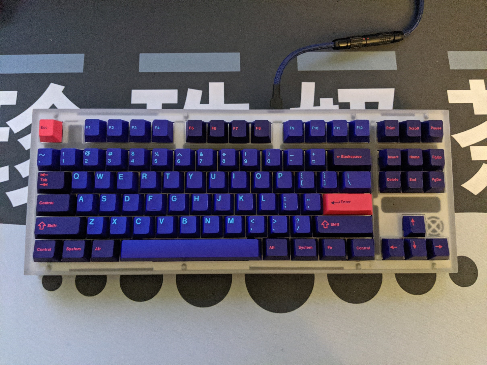

Keyboards
Xo v3
This is the Monstargear Xo v3. It has an FR4 plate and a PVD Brass weight with an aluminum body. It is built with SP-Star blue and white linear switches that are lubed with Krytox 205g0, springswapped to 70g 16mm TX springs that are lubed with Krytox 106 GPL and filmed with Deskeys films. Keycaps are GeekArk 9009 with the Korean alphas kit and green spacebar and accent keys.
FR4 plate without Foam (current)

PC K80
This is the Monstargear PC K80. It has an aluminum plate with a brass weight and a polycarbonate body. It is built with NovelKeys Cream switches that are lubed with Krytox 205g0, springswapped to 70g 14mm TX springs that are lubed with Krytox 106 GPL and filmed with DesKeys films. Keycaps are GMK Laser.
Lubed and Filmed NovelKeys Creams Test (current)
Lubed and Filmed HaluHalos Test
ID87
This is the IDOBAO ID87. It has an integrated aluminum plate and body with Gateron Black Ink V2 switches that are lubed with Krytox 205g0, springswapped to 68g SLOW SPRiT springs that are lubed with Krytox 106 GPL and filmed with Deskeys films. Keycaps are GMK Red Samurai.
Lubed and Filmed Gateron Black Ink V2 Sound Test (current)
Lubed and Filmed Cherry MX Black Sound Test

ALT HP
This is the DROP ALT High Profile edition. It has an integrated aluminum plate and body with SMD KS-9 Gateron Yellow switches lubed with Krytox 205g0, stock springs that are lubed with Krytox GPL 106 oil, and filmed with Kelowna films. Keycaps are a generic PBT BOW set with Hiragana sublegends.
Lubed and Filmed SMD KS-9 Gateron Yellows (current)
Lubed and Filmed KS-3 Gateron Yellows

CTRL HP
This is the DROP CTRL High Profile edition. It has an integrated aluminum plate and body with Gateron Yellow KS-9 switches lubed with Krytox 205g0, stock springs lubed with Krytox 106 GPL oil and filmed with Kelowna films. Keycaps are the stock DROP CTRL doubleshot PBT shinethrough grey set.
Lubed and Filmed Gateron Yellow KS9
Stock Gateron Yellow KS9